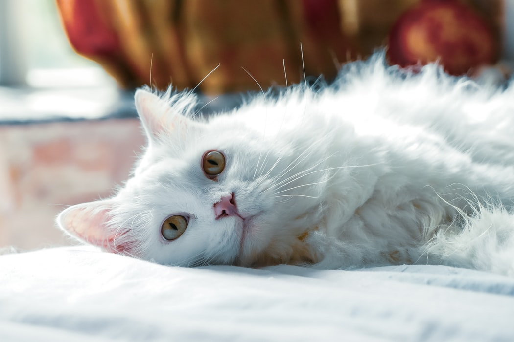
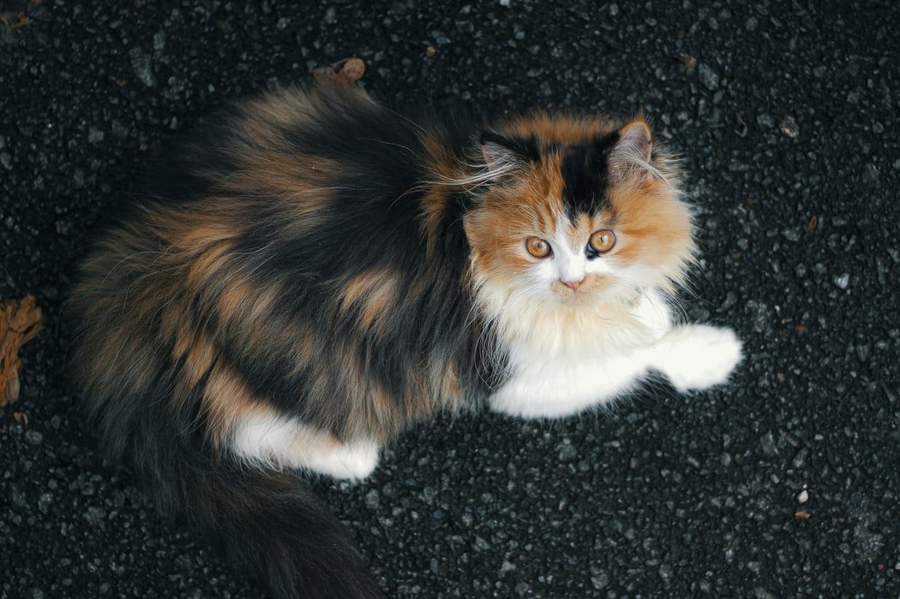

แมวเปอร์เซีย (Persian)
 ลักษณะทั่วไปและพฤติกรรมของแมวเปอร์เซีย
ราชินีแมวจากแดนตะวันออกกลาง ซึ่งมีถิ่นกำเนิดอยู่ในแถบเปอร์เซีย หรือประเทศตุรกีกับอิหร่านในปัจจุบัน แมวเปอร์เซียถือเป็นแมวต่างประเทศสายพันธุ์แรกที่ถูกนำเข้ามาในประเทศไทย สิ่งที่ทำให้แมวสายพันธุ์นี้ยังคงเป็นที่นิยมในหมู่คนรักแมวก็เพราะว่า นอกจากจะมีหน้าตาน่าเอ็นดูแล้ว ขนปุกปุยของแมวเปอร์เซียยังมีสีสันที่หลากหลาย และนิสัยส่วนตัวก็น่ารักด้วย
แมวเปอร์เซีย เป็นแมวที่มีขนาดกลางถึงขนาดใหญ่ มีกระดูกที่ใหญ่และแข็งแรง หัวและหน้ากลม หน้าผากโหนก แก้มเต็ม ดวงตากลมโต และอยู่ในตำแหน่งที่ห่างกัน มีจมูกที่หัก กล่าวคือ สังเกตได้ชัดเจนเมื่อมองจากด้านข้างจะเห็นจุดหักระหว่างจมูกกับหน้าผากชัดเจน เมื่อมองจากด้านหน้าจะเห็นเป็นขีดอยู่ระหว่างดวงตา นอกจากหน้าตาที่น่ารักแล้ว ยังเป็นแมวที่มีอุปนิสัยอ่อนโยน เข้ากับคนอื่นได้ง่าย มีความร่าเริงซุกซน ปีนป่ายไปตามจุดต่าง ๆ เพื่อหาของมากัดเล่น ช่างประจบประแจง และเป็นแมวที่มีไหวพริบมากทีเดียว
การเลี้ยงดูแมวเปอร์เซีย
เมื่อตัดสินใจจะเลี้ยงแมวพันธุ์นี้แล้ว จงพึงระลึกไว้เสมอว่า การดูแลขนของแมวเปอร์เซียเป็นสิ่งที่จำเป็นอย่างยิ่ง ผู้เลี้ยงต้องหมั่นทำความสะอาด โดยการแปรงและสางขนแมวอย่างสม่ำเสมอ จะช่วยป้องกันการเกิดขนพันกัน ซึ่งอาจกลายเป็นแหล่งเพาะพันธุ์เชื้อโรค รวมทั้งพยาธิต่าง ๆ ที่จะเป็นสาเหตุของโรคผิวหนังอักเสบและเป็นที่อยู่ของเห็บหมัดอีกด้วย ส่วนในเรื่องของอาหารการกินนั้น ควรเลือกอาหารที่ช่วยให้ทางเดินอาหารของแมวไม่อุดตัน เนื่องจากแมวเปอร์เซียจะใช้เวลาส่วนใหญ่ในการเลียทำความสะอาดขน อันเป็นสาเหตุในการกินหรือกลืนเส้นขนเข้าไปเป็นจำนวนมาก หากเส้นขนไปรวมตัวกันในช่องท้อง จะทำให้แมวเปอร์เซียมีอาการสำรอกหรือเกิดปัญหาของระบบย่อยอาหารได้